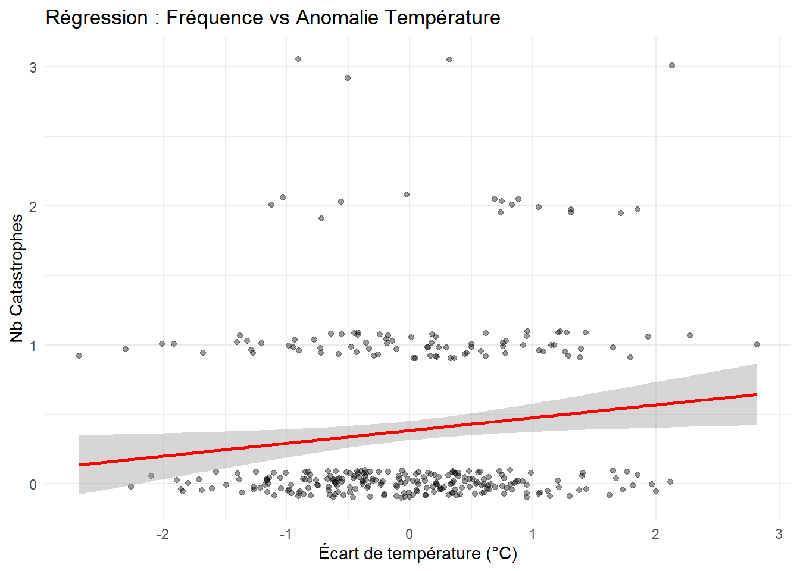

| Gap_Temp | Nb_Catastrophes | Morts | Cout | |
|---|---|---|---|---|
| Gap_Temp | 1.00 | 0.13 | 0.18 | -0.02 |
| Nb_Catastrophes | 0.13 | 1.00 | 0.08 | 0.27 |
| Morts | 0.18 | 0.08 | 1.00 | 0.28 |
| Cout | -0.02 | 0.27 | 0.28 | 1.00 |
Analyse des Résultats
Nous cherchons ici à quantifier les liens entre le réchauffement (anomalie de température) et les conséquences des catastrophes.
Matrice de corrélation
On observe une corrélation positive entre Gap_Temp et Nb_Catastrophes.
Fréquence des catastrophes, l’anomalie de température explique-t-elle le nombre d’événements ?
`geom_smooth()` using formula = 'y ~ x'
Estimate Std. Error t value Pr(>|t|)
(Intercept) 0.38390093 0.03514148 10.924440 7.831184e-24
gap_temp 0.09241737 0.03802874 2.430198 1.563827e-02La p-value (Pr) associée à gap_temp est significative (< 0.05). Un écart de température positif augmente la fréquence des aléas.
Modèle 2 : Coût économique
L’anomalie de température explique-t-elle le coût financier (en USD) ?
Estimate Std. Error t value Pr(>|t|)
(Intercept) 130539319 47355060 2.7566076 0.006174453
gap_temp -16561442 51245801 -0.3231766 0.746771949La p-value est de 0.747 ce qui est largement supérieur au seuil de significativité. Donc, contrairement à la fréquence, nous ne trouvons pas de lien statistiquement significatif entre l’anomalie de température et le montant des dégâts financiers. Cela s’explique probablement par la nature des données : le coût des catastrophes est très volatile. Une seule catastrophe majeure (indépendante de la température mensuelle moyenne) peut engendrer des coûts énormes, rendant la corrélation linéaire difficile à établir.
Conclusion de l’analyse
Au terme de cette analyse portant sur la France (1996-2022), nous pouvons dresser deux constats majeurs :
1.Sur la fréquence : Il existe un lien significatif et positif. Les mois présentant une anomalie de température élevée (plus chauds que la normale) sont associés à un plus grand nombre de catastrophes naturelles. Le changement climatique semble donc multiplier les aléas.
2.Sur le coût : Ce lien n’est pas direct pour les dommages financiers. Si les catastrophes sont plus fréquentes, leur coût individuel reste imprévisible et ne dépend pas linéairement de la température mensuelle.
En résumé : Le réchauffement climatique en France semble agir comme un “multiplicateur d’événements”, augmentant la fréquence des risques, sans pour autant que l’on puisse prédire mécaniquement l’explosion des coûts mois par mois via un modèle linéaire simple.